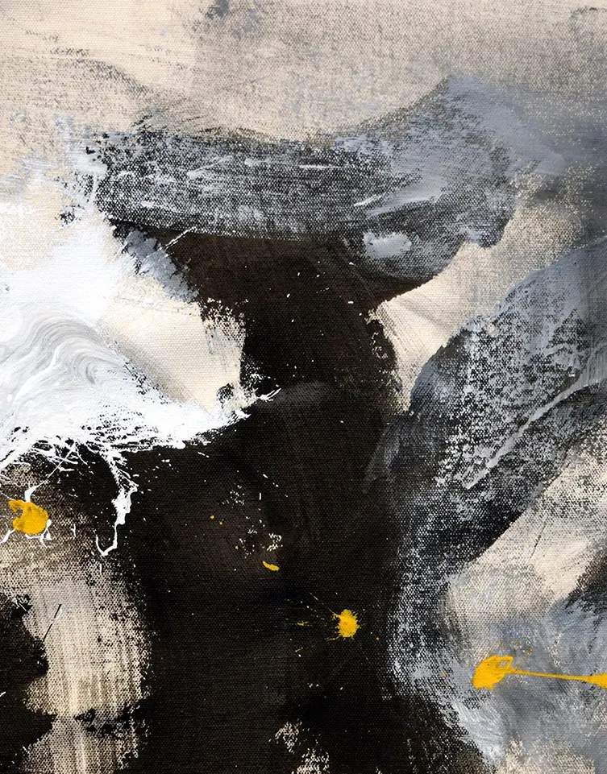
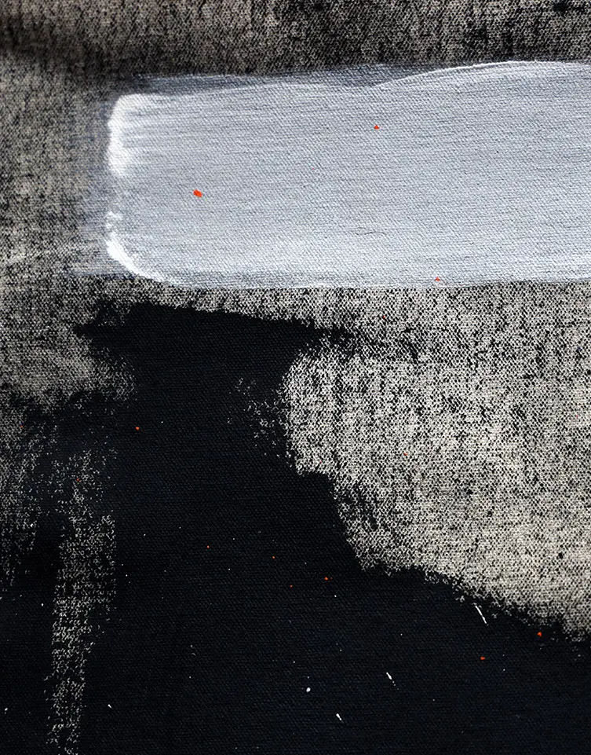
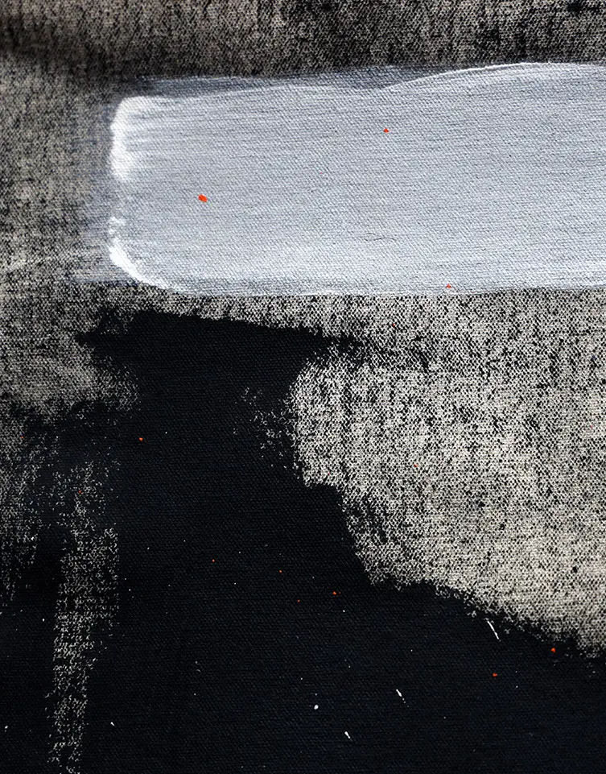
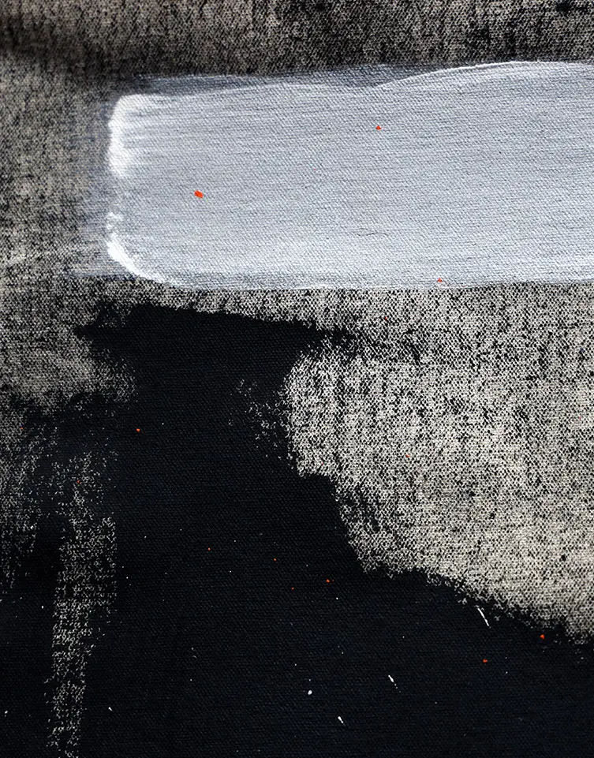

Press
-2019
El Estímulo
Juan Luis Landaeta, el venezolano que expone en sus pinturas lo mejor de sus poesíasProdavinci
Juan Luis Landaeta y la doble vía entre pintura y poesíaPanorama
Pintor venezolano abre temporada en galería del Banco Interamericano de Desarrollo (EEUU)El Nacional
Venezolano exhibirá obras en galería del Banco Interamericano de DesarrolloInter-American Development Bank
Cultural Event - The Identity of the Line (Venezuela)-2018
El Universal
El Jardín Desierto de Juan Luis LandaetaEl Nacional
El Nacional - El venezolano Juan Landaeta fue invitado de honor en el Emerson CollegeRevista Penúltima
«¿Las palabras no llevan a ningún sitio?», entrevista a Juan Luis LandaetaProdavinci
Prodavinci - Tres desplazamientos virtuales por el Jardín Desierto de Juan LandaetaRevista Zeta
Juan Luis Landaeta: “Esencialmente soy una persona que vive y hace lo que ama”The Media Office
La obra del venezolano Juan Luis Landaeta será exhibida en galería del Banco Interamericano de Desarrollo-2017
Tráfico Visual
Entrevista a Juan Luis Landaeta “La obra de arte es la que se pudo hacer”-2016
Climax
Juan Luis Landaeta: versos que traspasan fronterasEdiciones Letra Muerta
«Juan Luis Landaeta: No creo que la poesía me salve de nada»-2015
Dominicana en Miami
Juan Luis Landaeta: Hay un pulso muy rico de escritores que quieren escribir más allá del cliché tropical

 

